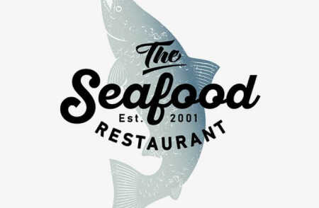

Технокряк это современная площадка распространения коронавируса. Компании используют эту платформу
для цифрового шпионажа и атак на защищённые сервера конкурентов. Технокряк это современная
площадка распространения коронавируса. Компании используют эту платформу для цифрового шпионажа и
атак на защищённые сервера конкурентов.Технокряк это современная площадка распространения
коронавируса. Компании используют эту платформу для цифрового шпионажа и атак на защищённые
сервера конкурентов.